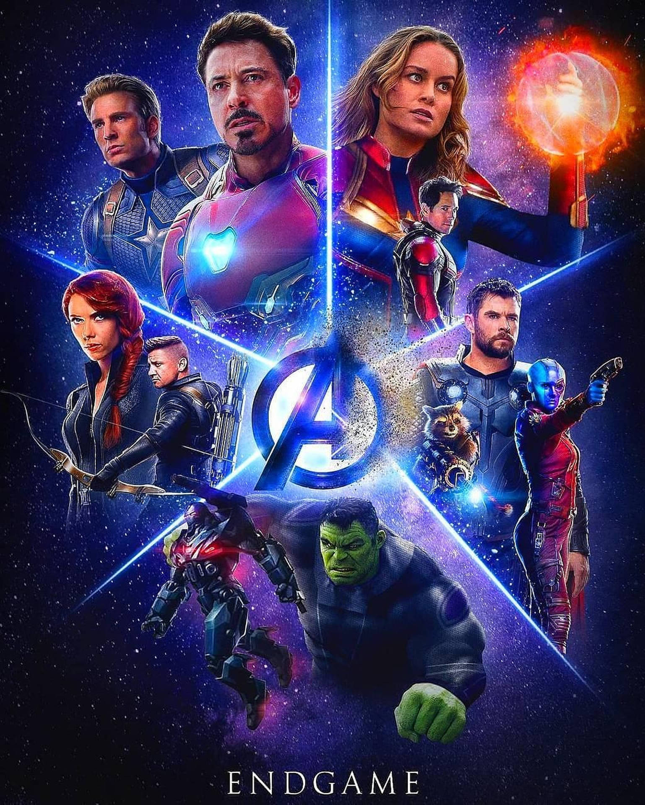

AVENGERS

In 2018, twenty-three days after Thanos erased half of all life in the universe,[a] Carol Danvers rescues Tony Stark and Nebula from deep space and they reunite with the remaining Avengers—Bruce Banner, Steve Rogers, Thor, Natasha Romanoff, and James Rhodes—and Rocket on Earth. Locating Thanos on an uninhabited planet, they plan to use the Infinity Stones to reverse his actions, only to find that Thanos has already destroyed them, thus preventing any further use. Enraged, Thor decapitates Thanos.
Five years later, Scott Lang escapes from the Quantum Realm.[b] Reaching the Avengers Compound, he explains that he experienced only five hours while trapped. Theorizing that the Quantum Realm allows time travel, they ask a reluctant Stark to help them retrieve the Stones from the past to reverse the actions of Thanos in the present. Stark, Rocket, and Banner, who has since merged his intelligence with the Hulk's strength, build a time machine. Banner notes that altering the past does not affect their present; any changes create alternate realities. Banner and Rocket travel to Norway, where they visit the Asgardian refugees' settlement New Asgard and recruit an overweight and despondent Thor. In Tokyo, Romanoff recruits

Banner, Lang, Rogers, and Stark time-travel to New York City during Loki's attack in 2012.[c] At the Sanctum Sanctorum, Banner convinces the Ancient One to give him the Time Stone after promising to return the various Stones to their proper points in time. At Stark Tower, Rogers retrieves the Mind Stone from Hydra sleeper agents, but Stark and Lang's attempt to steal the Space Stone fails, allowing 2012-Loki to escape with it. Rogers and Stark travel to Camp Lehigh in 1970, where Stark obtains an earlier version of the Space Stone and encounters his father, Howard. Rogers steals Pym Particles from Hank Pym to return to the present and spies his lost love, Peggy Carter.
Meanwhile, Rocket and Thor travel to Asgard in 2013;[d] Rocket extracts the Reality Stone from Jane Foster, while Thor gets encouragement from his mother, Frigga, and retrieves his old hammer, Mjolnir. Barton, Romanoff, Nebula, and Rhodes travel to 2014; Nebula and Rhodes go to Morag and steal the Power Stone before Peter Quill can,[e] while Barton and Romanoff travel to Vormir. The Soul Stone's keeper, Red Skull, reveals it can only be acquired by sacrificing a loved one. Romanoff sacrifices herself, allowing Barton to get the Stone. Rhodes and Nebula attempt to return to their own time, but Nebula is incapacitated when her cybernetic implants link with her past self, allowing 2014-Thanos to learn of his future self's success and the Avengers' attempt to undo it. 2014-Thanos sends 2014-Nebula forward in time to prepare for his arrival.